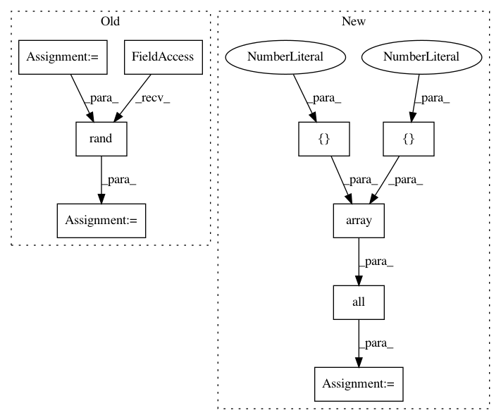

ecb22f715ce7c785ef85ecbb067cf74238944a83,tests/test_matrices_space.py,TestMatricesSpaceMethods,test_make_symmetric_and_is_symmetric_vectorization,#TestMatricesSpaceMethods#,70
Before Change
@geomstats.tests.np_only
def test_make_symmetric_and_is_symmetric_vectorization(self):
n_samples = self.n_samples
mats = gs.random.rand(n_samples, 5, 5)
results = self.space.make_symmetric(mats)
self.assertTrue(gs.all(self.space.is_symmetric(results)))
After Change
self.assertAllClose(result, expected)
def test_make_symmetric_and_is_symmetric_vectorization(self):
points = gs.array([
[[1., 2.],
[3., 4.]],
[[5., 6.],
[4., 9.]]])
sym_points = self.space.make_symmetric(points)
result = gs.all(self.space.is_symmetric(sym_points))
expected = True
self.assertAllClose(result, expected)
def test_inner_product(self):
In pattern: SUPERPATTERN
Frequency: 3
Non-data size: 9
Instances
Project Name: geomstats/geomstats
Commit Name: ecb22f715ce7c785ef85ecbb067cf74238944a83
Time: 2018-12-12
Author: ninamio78@gmail.com
File Name: tests/test_matrices_space.py
Class Name: TestMatricesSpaceMethods
Method Name: test_make_symmetric_and_is_symmetric_vectorization
Project Name: geomstats/geomstats
Commit Name: fb5ddabf1cea71e36d62f1557f72b28dfa290af8
Time: 2018-12-13
Author: ninamio78@gmail.com
File Name: tests/test_matrices_space.py
Class Name: TestMatricesSpaceMethods
Method Name: test_make_symmetric_and_is_symmetric_vectorization
Project Name: deepchem/deepchem
Commit Name: a13bbd0d3c739ff724c47244edcac128e9583215
Time: 2018-04-30
Author: lilleswing@gmail.com
File Name: deepchem/models/tensorgraph/tests/test_layers.py
Class Name: TestLayers
Method Name: test_hingeloss